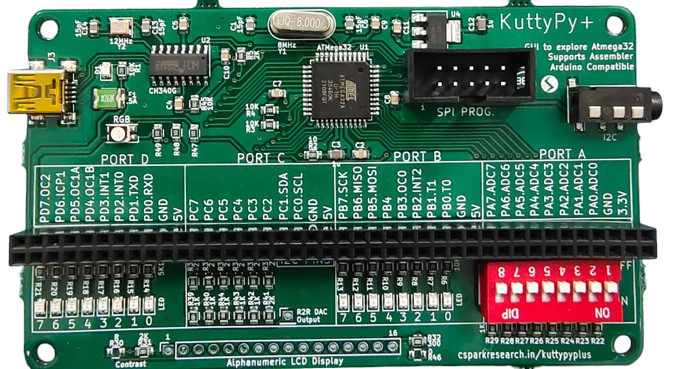
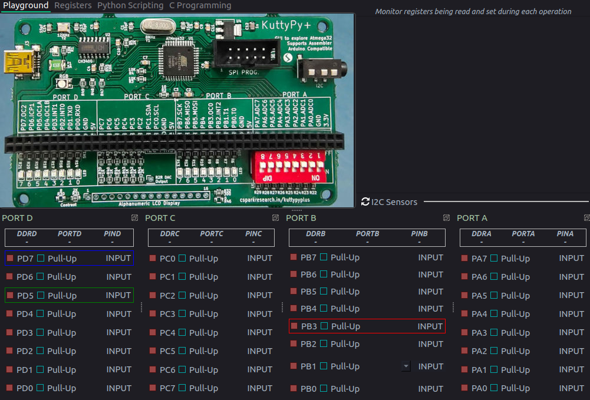
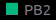
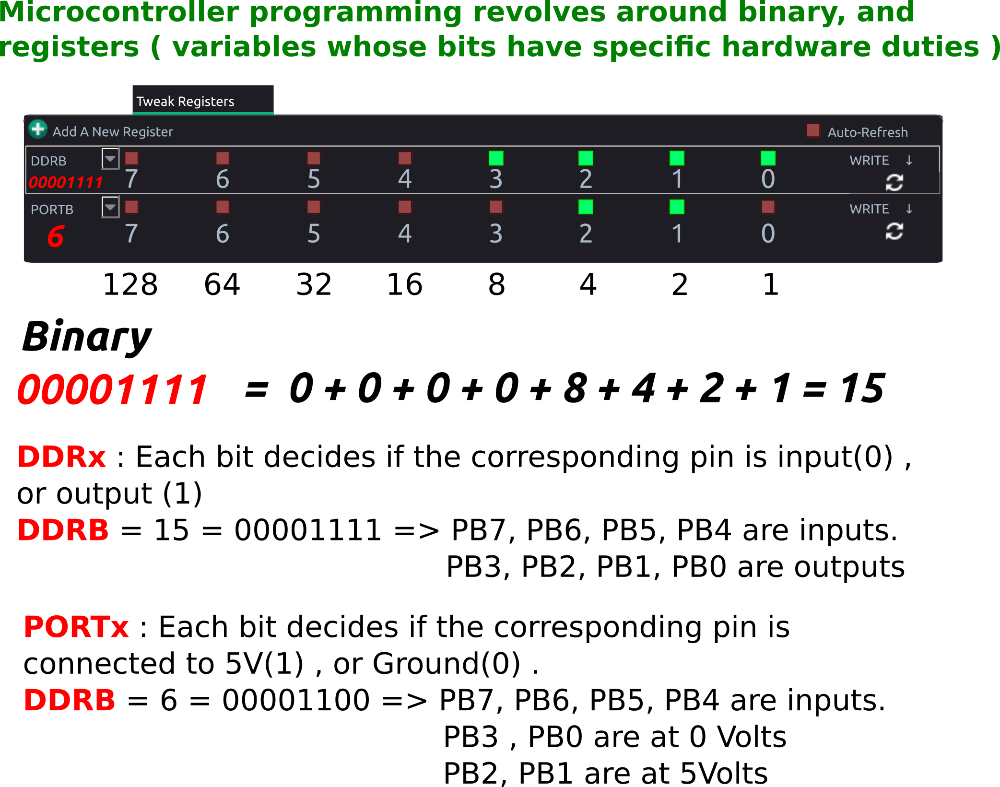
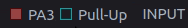

2 Hour Tutorial
Tutorial for learning to use KuttyPy - A Python to real world bridge - in a 2 hour workshop session
Intended audience
- Beginners who would like to explore microcontroller functions via Python without the compile+upload hassle.
- Hobbyists who want a way to control external parameters such as lights, fans, and robots from their Python programs
- Scientists who want to use affordable and easily available sensors for physical parameters( temperature, humidity, pressure…) without having to learn embedded systems and communications.

Software Installation¶
Given the paucity of time, the fastest ways for installing the toolchain on different operating systems are listed. Click to expand.
Windows with Python3 installed
- Python3 must be installed, and
pipshould be accessible. - Open a command prompt as administrator, and use pip3 to install the KuttyPy package
py -3 -m pip install KuttyPy - Download and install the CH341 USB Driver
- You will now be able to launch
kuttypyplusfrom the prompt, and import thekuttyPylibrary from any Python script. - you can also launch
kuttypyide - If you wish to compile C code and upload to the KuttyPy hardware, winavr must be installed, and
avr-gccmust be accessible from a command prompt.- Download and install
winavrfrom winavr.sourceforge.net
- Download and install
Windows bundled installer
- The bundled installer includes Python3 and dependencies and KuttyPy software. Also includes winavr, usb driver.
Made with Pyinstaller: Python will not be accessible globally
Since the installer was made using PyInstaller, Python3 will not be accessible globally, and you will be limited to the ipython console within the KuttyPy software. A better option would be to use pip to fetch PyQT5, qtconsole, pyserial, pyqtgraph, scipy , and KuttyPy . Winavr and the driver can be installed separately. Refer to the previous section.
Ubuntu
- Download the deb file from here
- Navigate to the Downloaded deb file location, and install it. This also fetches dependencies : scipy, qtconsole, avr-gcc etc
sudo apt install ./KuttyPy-1.0.25.deb - launch the kuttyPy GUI from the command prompt using the command
kuttypyplus
It is also present in the applications menu as KuttyPy GUI .
- You can also launch the kuttyPy IDE from the menu, or using the command
kuttypyide
Using PIP on other OSes
- Python3 must be installed
- Open a command prompt as administrator, and use pip3 to install the KuttyPy package
pip3 install kuttyPy - You will now be able to launch
kuttypyfrom the prompt, and import thekuttyPylibrary from Python. - If you wish to compile C code,
avr-gccmust be accessible from a command prompt. Install it from the package manager of your OS.
setting permissions on Linux based systems
Accessing the hardware on linux requires certain permissions to be set. Due to an apparent bug with pip3, the install script may fail to do this.
As a workaround, you can run the program as root to verify the permissions issue
sudo kuttypy
chmod +x postinst.sh
sudo ./postinst.sh
kuttypy
Installing from source code
sudo apt install python3-serial python3-pyqt5 python3-pyqt5.qtsvg gcc-avr avr-libc python3-qtconsole python3-scipy python3-pyqtgraph
git clone http://github.com/csparkresearch/kuttypy-gui
cd kuttypy-gui
python3 KuttyPyPlus.py
KuttyPy Software¶
Screenshot of the Graphical interface after launching kuttypy

The title will showHardware not Detected if not connected, or if a permissions issue exists
Explore the functions¶
- You have already noticed that the User Interface(UI) resembles the kuttyPy board.
- It has four ports
PORTA, B , C, Dwith 8 pins each, and each pin has a row representing it:
- Each Pin is configured as an input by default, and the RED coloured box next to it indicates the input is
LOWor near 0 Volts.- If the input is
HIGH, which can be accomplished by connecting it to 5V, or enabling thepull-upcheckbox, the RED box will turn toGREEN - Since the inputs are
floating, merely touching the pins with your fingers will cause the inputs to fluctuate betweenREDandGREENstatus.
- If the input is
- Each pin can be reconfigured as an
OUTPUTtype by clicking on theINPUTbutton next to it.- Make any of the pins
PD5,PD7, orPB3an output type, and click on its square RED button to set it toHIGH. These pins are connected to the RGB LED on the board, so the LED will glow!
- Make any of the pins
Hello World¶
Introduction to Registers¶
Programs executing on Microcontrollers use special function registers(SFRs) to manipulate the hardware(Inputs, outputs, ADCs etc). These are basically predefined variables, where each bit is associated with a hardware change.
Binary conversion example

setReg and getReg Python function calls in the kuttyPy library can be used to read and write these registers. Here’s an example. Run it in a python3 shell.
from kuttyPy import * #Import the library. also automatically connects to any available kuttypy hardware.
setReg('DDRD',160) #0b10100000 PD7(BLUE LED) and PD5(GREEN LED) made output type
setReg('PORTD',160) # PD5 and PD7 set to HIGH. Both LEDs start glowing. Colour looks like cyan.
For detailed examples, visit the python coding page.
You may skip to the I/O examples page which will cover the following topics:
-
Turning on an LED connected to any PIN
-
Reading a voltage from an ADC enabled PIN
-
Plotting with Matplotlib
-
Using the iPython console
-
Reading from I2C sensors
Exercise : Python script for digital I/O
- Write a python script to make PD5 and PD7 output type.
- Set PD5 HIGH (Green LED will glow)
- wait half a second ( time.sleep(0.5) )
- Set PD7 also HIGH. (Blue and Green will glow. resulting colour is Cyan )
- wait half a second ( time.sleep(0.5) )
- Set both LOW. (Nothing glows)
- Some pins have additional functionality:
- Analog to Digital Convertor enabled inputs:
- All pins on
PORTA (PA0 - PA7)for this microcontroller have a 10-bit ADC functionality. - Make it an
OUTPUT, and click again to see a variable slider and an LCD number show a value between 0-1023
- You can use this as an 8 channel, 0-5V voltmeter for testing analog joysticks, sensors etc. Click on the LCD number to reveal a gauge and data logger!
- All pins on
- PWM outputs. PB3, PD5, PD7 . Adjust the RGB LED intensity using the sliders.
- Analog to Digital Convertor enabled inputs:
Exercise : Python script for reading ADC
- Enable ADC on PA0 via the graphical interface.
- Click on the LCD display, and from the dialog, check ‘show register manipulations’
- Note the registers being written and read
- Disable the ADC (Set to input)
Go to the scripting tab, and write a program to read 10 values from PA0
Stuff seems to be working?
Now that we have skimmed over the basics of the graphical utility’s playground, it would appear that the board is capable
of controlling real-world events from Python. For further details on the hardware schematic, visit the page .
The pinout diagram will be very useful although the board itself is well labelled. The ATMEGA32 datasheet will be handy as well.
Sensors using I2C communication¶
- I2C Sensors for a range of physical parameters such as pressure, acceleration etc can be connected using PC0(SCL), and PC1(SDA).
- Use the graphical interface to scan for sensors and view readings
- Check out functionality, and explore potential applications.
- Write Python code to read data from an accelerometer.
Sensors Exercise : Write a python program to read data from an accelerometer
- The complete docs are here .
MPU6050_init()values = MPU6050_all()- Using the above two functions, one can get data from this sensor, where
valuesis a 7 item long list. - [Ax, Ay, Az, T, Gx, Gy, Gz] . A = acceleration. G = angular velocity
Sensors Exercise #2: Plot 200 values from MPU6050 (Ax) using matplotlib
pip3 install matplotliborpy -3 -m pip install matplotlib- The complete docs are here .
from kuttyPy import * from matplotlib import pyplot as plt MPU6050_init() #Initialize the sensor points = 0 for a in range(200): x = MPU6050_all() #Fetch readings if x is not None: plt.scatter(points,x[0]) points +=1 plt.pause(0.01) #10ms delay. - Replace the x-axis with timestamps instead of point numbers.
- Store 200 values, and timestamps in two lists, and plot using
plt.plot(x[],y[])andplt.show()
Sensors Exercise #3: Extract the oscillation frequency from the data using scipy’s leastsq fitting
import numpy as np
from scipy import optimize
#-------------------------- Fourier Transform ------------------------------------
def fft(ya, si):
'''
Returns positive half of the Fourier transform of the signal ya.
Sampling interval 'si', in Seconds
'''
NP = len(ya)
if NP%2: #odd number
ya = ya[:-1]
NP-=1
v = np.array(ya)
tr = abs(np.fft.fft(v))/NP
frq = np.fft.fftfreq(NP, si)
x = frq.reshape(2,int(NP/2))
y = tr.reshape(2,int(NP/2))
return x[0], y[0]
def find_frequency(x,y): # Returns the fundamental frequency using FFT
tx,ty = fft(y, x[1]-x[0])
index = find_peak(ty)
if index == 0:
return None
else:
return tx[index]
def sine_eval(x,p): # y = a * sin(2*pi*f*x + phi)+ offset
return p[0] * np.sin(2*np.pi*p[1]*x+p[2])-p[3]
def sine_erf(p,x,y):
return y - sine_eval(x,p)
def fit_sine(xa,ya, freq = 0): # Time in S, V in volts, freq in Hz, accepts numpy arrays
size = len(ya)
mx = max(ya)
mn = min(ya)
amp = (mx-mn)/2
if freq == 0: # Guess frequency not given
freq = find_frequency(xa,ya)
if freq == None:
return None
#print 'guess a & freq = ', amp, freq
par = [amp, freq, 0.0, 0.0] # Amp, freq, phase , offset
par, pcov = optimize.leastsq(sine_erf, par, args=(xa, ya))
return par
####
#### YOU NEED TO WRITE CODE TO COLLECT data points and store timestamps to `TIMESTAMPS`
#### and values to `DATAPOINTS` here.
####
results=fit_sine(TIMESTAMPS,DATAPOINTS) #Returns : Amp, freq, phase , offset
if results is not None:
amp=abs(results[0])
freq=results[1]
print('Results: %5.2f amp, %5.3f Hz<br>'%(amp,freq))
Basic C code¶
All the register manipulation commands issued by Python running on your laptop are interpreted by a bootloader firmware executing on the microcontroller. In addition to this, you can also compile C code, and flash it to the remaining storage space on the microcontroller, thereby making it independent and capable of functioning from any 5V power supply.
Exercise : C program for digital I/O
- Write a C program to make PD5 and PD7 output type.
- Set PD5 HIGH (Green LED will glow)
- wait half a second ( delay_ms(500); imported from “mh-utils.c” )
- Set PD7 also HIGH. (Blue and Green will glow. resulting colour is Cyan )
- wait half a second ( delay_ms(500); imported from “mh-utils.c” )
- Set both LOW. (Nothing glows)